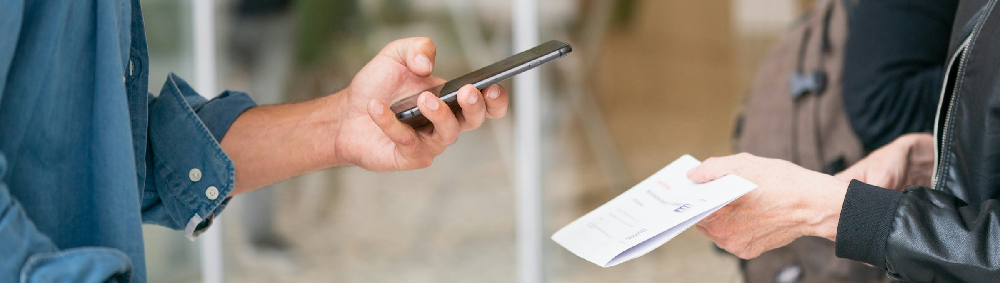

Köp via webben
Vi använder Nortic som leverantör för digitala biljetter. När du bokar via webben så får du en digital biljett som du kan skriva ut eller visa upp i mobilen för funktionärerna i entrén.
Köp biljetterKöp på plats
Förutom att boka via webben så kan du givetvis köpa din biljett på plats. Du kan betala via Swish eller kontant. Vi öppnar en timme innan föreställningen börjar. Var gärna i god tid för att vara säkra din biljett.
Föreställningar Hitta hitBiljettpriser
Vi vill att så många som möjligt ska ha möjlighet att ta del av våra föreställningar och betala våra medverkande skäliga löner och erbjuda underhållning av hög kvalitet.
Ordinarie
360 kr
Pensionär
320 kr
Barn (upp till 15 år)
150 kr
Gruppbokningar eller särskilda behov
Är ni en grupp om fler än 8 deltagare? Eller behöver du t.ex. rullstolsanpassad plats? Kontakta oss så hjälper vi dig/er vidare.